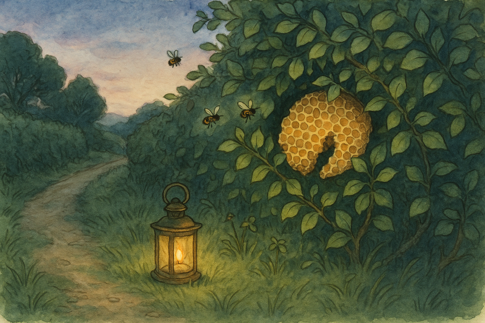

Fourth Age, in the Shire when the hedges are thick with late-summer scent and the bees keep their own counsel.
Hobbits have a saying—quiet as it is true—that you can tell the state of the country by the state of its hedges. When the hedges are well-kept, folks have time for tea. When the hedges go ragged, something else is being mended instead.
It was a warm evening in the Hill-country, the sort that does not hurry the light away. The sun had dipped behind the round shoulder of the Hill, but the west was still pale as milk in a cup, and the lane-glass held a gentle gleam.
I had gone out with my small shears and my larger sense of duty, for my front hedge—privet and hawthorn together, as stout a border as any respectable door could ask—had begun to lean into the path like a gossip. The Brandywine post brought news most days, and I had grown fond of the notion that news ought to arrive without being scratched in the face.
There were bees about, too, and more of them than usual. They worked the late clover in my little strip of grass as if they had been set to it by the Mayor himself. Now and again one would bump my ear or hover at my elbow, and I would swat at nothing with my free hand and mutter the ancient hobbit curse against inconveniences: “Oh, do be reasonable.”
Then I heard the sound that makes even a comfortable hobbit stand still.
A thin, steady hissing from the hedge—as if someone were warming a kettle in secret, or as if the hedge itself had decided to speak through its teeth.
I held my breath, shears poised. The bees had changed their manner. They were no longer drifting lazily from flower to flower; they were streaming in one direction, all into a dark pocket of leaves near the base of the hedge where the hawthorn grew densest. They did not seem angry; they seemed intent.
Now, I am not the sort of person who thinks every oddness is a portent, nor do I go poking at wasps’ nests for sport. But the Shire in those years had begun to remember that the world is wider than our hills. There were Rangers on the roads now and then (quiet men, usually, with eyes that noticed things I preferred not to have noticed at all), and there were whispers of old places being set right again far beyond the Green Dragon.
So I did what any sensible hobbit would do: I fetched a lantern.
The lantern light laid a honey-coloured pool on the grass, and the hedge cast a shadow like a stitched seam. When I leaned in, careful as a cat near cream, I saw that the pocket of leaves held a honeycomb—broken, as if it had been torn from its proper home and tucked away in haste. The comb shone with wet sweetness. A few bees crawled over it as tenderly as hands smoothing a child’s hair.
And there, wedged behind the comb, was something that was not leaf and not thorn.
It was a little slip of birch-bark, no longer than my thumb, with two holes pricked near one end and a thread of dried grass through them, as though it had been meant to hang.
I stared at it, quite forgetting to be cross about bees. My mind, which is not as adventurous as it once was, tried to suggest a dozen comfortable explanations. A child’s treasure. A fancy from a passing pedlar. Some nonsense from my own pantry that had somehow grown legs.
Then one of the bees rose up from the comb and hovered inches from my nose. It was fat with pollen, its legs golden, its wings a blur. It did not sting. It simply hung there, steady as a star, and in that small insistence there was a kind of instruction.
“All right,” I whispered, as if speaking to a stern aunt. “I see.”
I took my handkerchief and wrapped the honeycomb gently. (One does not put bare fingers into a tale that is beginning.) The bees did not protest. They climbed off and circled my lantern once, then returned to the hedge as if their part was done.
Inside, in my study, I set the comb on a plate and warmed a knife. Honey is a persuader, and I confess my first thought was to salvage what I could; but the bark-slip sat there under the wax like a button under a cushion, and my curiosity—old, faithful, and occasionally troublesome—would not be denied.
Very carefully I pared away wax until the birch-bark came free.
Upon it were three marks, scratched with something sharp: a small circle, a line like a road, and a little forked sign like the letter Y.
No words at all.
I turned it over. On the back, near one edge, someone had pressed a seal into the bark while it was still damp. It was faint, but there: a tree, crowned, with seven stars above it.
My stomach did a queer little turn, and all at once the room felt larger than it had a moment before. I had seen that mark in other days—on a letter carried in haste, on a pouch of coin given without fuss, on a scrap of cloth that had been wrapped around a wound with hands that did not tremble.
The King’s Tree.
I sat down very slowly, because it is not wise to be standing when old worlds touch your shoulder.
For a long while I did nothing but listen to the house settling and the bees outside working the last of the light. Then, because tales do not come with instructions printed neatly at the bottom, I did the next best thing: I looked for patterns.
The circle might be a hill. The line, a lane. The fork, a meeting of paths.
There is, not half a mile from my gate, an old meeting-place of ways where three lanes come together in a Y—one to Hobbiton, one down toward Bywater, and one that wanders off toward the woody bit no one visits unless they must. At that meeting-place stands a low stone, half-buried, and on it someone long ago carved a ring, now softened by moss. Most hobbits call it “the old boundary mark” and think no more of it.
I thought of it then, and my hands became very still.
It is a funny thing, courage. In books it is all trumpets and bright swords; in kitchens it is more often a sigh, and the putting on of boots.
I went out again with my lantern, the bark-slip in my pocket, and a small jar of honey in my hand—because if you are going to meet anyone on a dark lane, it is best to arrive with something that can be offered without shame.
The meeting-place was quiet. The hedge-rows on either side of the lane leaned in, listening, and the last birds had gone to their nests. I set my lantern on the old stone, and the light made the carved ring shine wetly, as if it had been cut yesterday.
I waited.
I will not pretend it was comfortable. Every twig-snap in the undergrowth made my heart hop like a rabbit. Twice I nearly talked myself into leaving—after all, what business had I with secret signs?—but the bees’ steadiness had lodged in me like a thorn, and I could not shake it out.
At last a figure stepped out of the darker lane, so quietly that I might have thought him part of the shadow until the lantern found the edge of his cloak. He was tall, as Rangers are tall, and he walked as if he had learned to be silent in places where silence keeps you alive.
He did not come close at first. He stopped at the fork of the lanes and watched me as one watches a dog that might be friendly or might bite.
“Good evening,” I said, because manners are armour too. “Good evening,” he answered, and his voice was low and tired. “You found it.”
“The bees brought it to my hedge,” I said, and at that his eyes—grey in the lantern light—shifted a fraction, as if to mark that down among the day’s wonders.
“They do that,” he said after a moment. “When they are asked kindly.”
There are questions that leap to the tongue, and there are questions that ought to be set down gently, like a hot pan. I chose the gentler way.
“Is someone in trouble?”
The Ranger hesitated. Then he stepped nearer, and I saw that there was a raw scrape along the side of his neck, half-hidden by his collar. It looked like a bramble had taken offence and argued hard.
“A courier was waylaid on the road,” he said. “Not far from here. The message could not travel as it was. So it travelled as it could.”
He glanced toward my jar. “Is that honey?” “It is,” I said, and held it out. “From my pantry. Not from my hedge.”
He took it with a sort of awkward gratitude, as if he had not been given small kindnesses in a while. He unscrewed the lid, tasted a fingerful, and for an instant his stern face softened—no more than a candle-flame bends in a draught, but enough to prove it can bend.
“Thank you,” he said. Then, very carefully, he held out his hand for the bark-slip. I gave it to him.
He looked at the three scratched marks, then at the seal, and nodded once. “It is enough,” he said. “Enough for what?” I asked. “Enough to know where to look next,” he said. “And enough to know that Shire-hands are still quick to help when help is needed.”
I felt my ears grow warm. “It was only bees,” I protested, because hobbits dislike being praised at night on lonely roads. “Bees are only bees,” he agreed, and there was a hint of humour in it. “Until they are not.”
He tucked the bark into his sleeve and turned as if to go. Then he paused and looked back.
“There is a new peace,” he said slowly, choosing the words as if they were stones in a river. “But peace, like a hedge, must be kept. Sometimes the keeping is done with swords. Sometimes it is done with shears. And sometimes—strangest of all—it is done with honey.”
“If you mean to say I should keep a jar in the cupboard,” I said, “I assure you I already do.”
This time he smiled outright, quick and gone. Then he stepped back into the darker lane and was swallowed by it, as if the night had been waiting to take him in.
I stood there a while longer, listening. Somewhere close by, in the hedge, a bee hummed—a low, satisfied note—as if a small musician had played the last chord of a tune.
When I returned home, I did not cut another leaf from my hedge that evening. I left it thick and a little untidy, because for the first time I thought: perhaps some things are meant to be kept not merely for looks, but for use.
And the next morning, when I poured honey into my tea, it tasted of clover and sunlight and the wider world—sweet, and a little sharp, and full of work.
— Bilbo